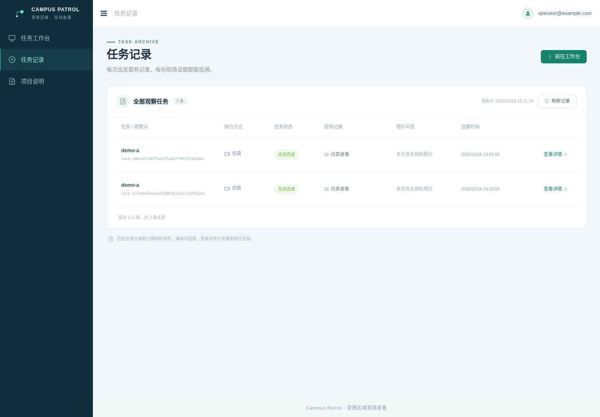
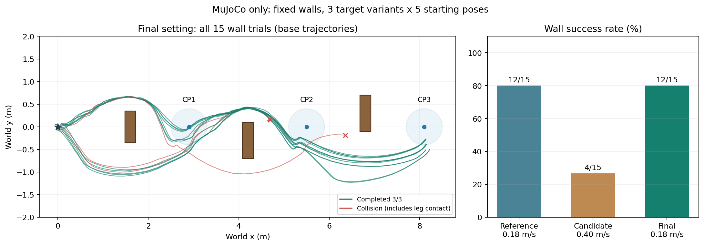

有边界的任务入口
按预设路线执行，一次一个任务。忙时拒绝，支持取消与总超时，不自动重跑。
ICT 创新赛赛题 1 · 项目成果
面向受限区域的现场查看助手。把预设路线、任务状态与结果归档连接起来，让每一次演示都有记录可查。
本页为静态成果展示：可查看真实历史结果，不接收新任务。
01 / 从任务到证据
网页工作台、单任务调度与远程任务通道已做本机验证。真实运动、相机照片和华为视觉模型的完整闭环仍待验证。

按预设路线执行，一次一个任务。忙时拒绝，支持取消与总超时，不自动重跑。
服务端和执行端分开；断线后保留本地结果，重连补传原录像。本机独立 HTTP 角色已验证，跨公网待验证。
区分实际仿真、接口替身和未验证能力。成功、碰撞及较差的候选参数均保留记录。
02 / 实测而非推测
两个固定场景，每个场景 3 组目标 × 5 个起始位姿。以下展示 2026-10-17 的最终历史结果，不代表实机成绩。
错位短墙 / STAGGERED WALLS
12 次成功，3 次碰撞。保留原模型与 0.18 m/s 横向限速。
方法边界：成功须全点按序到达且无碰撞、无跌倒。墙体场景成功率为 80%；整体 27/30 不能替代墙体成绩。模拟时间不是实机速度。
下载展示数据 JSON
0.4 m/s 候选仅 4/15 成功，最终保留 0.18 m/s。三阶段为同一批用例的对照与复跑，累计执行次数不等于独立随机环境数。
查看完整评测记录 ↗03 / 开放，同时说明边界
这是许可明确的公开子集。源码、依赖锁、相关测试、评测记录与来源说明一起保留，逐步补齐可验证的交付材料。
Vue / TypeScript；保留 V3 Admin Vite 的 MIT 来源和许可。
应用源码 · 依赖 API02FastAPI、账号、任务记录、远程协议与相关测试。
应用源码 · 非在线服务03清单、批量入口与人工核对流程；0 张真实图片、0 次请求。
未形成视觉效果成绩公开状态说明